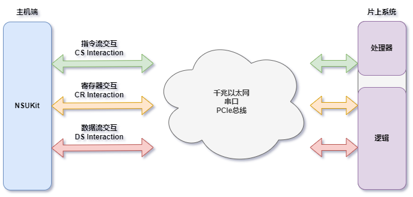
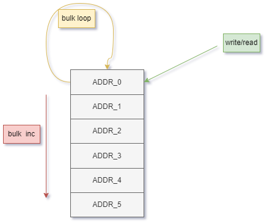
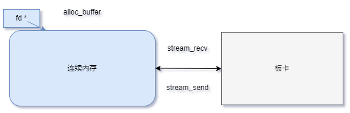

目录
- 环境安装
- 使用接口
- 指定协议接口
- 发起连接
- 寄存器交互
- 数据流交互
1. 环境安装
1.1. 环境依赖
1.2. 支持的操作系统与平台
Windows7 x64
Windows10 x64
Windows11 x64
Ubuntu 18.04 aarch64
Ubuntu 18.04 x64
Ubuntu 20.04 aarch64
Ubuntu 20.04 x64
CentOS 8.x x64
macOS 功能受限
1.3. 安装
2. 基础接口

- 与Soc常用的基本交互方式可抽象为指令寄存器交互(CR)、指令流交互(CS)与数据流交互(DS)三种，不同的Soc会选用不同的物理接口和协议来承载这三种基本交互。
- 指令寄存器操作 CR Interaction，主机对Soc侧地址寄存器读写操作，实现主机对Soc的状态查询与寄存器配置；
- 指令流操作 CS Interaction，主机与片上处理器指令通信，实现主机与片上处理器（Arm或Microblaze）的指令发送与反馈接收，采用ICD列表，NSUkit自动完成收发解析；
- 数据流操作 DS Interaction，实现Soc侧数据流到主机内存的上下行操作，可以将一片数据连续不断地从一端传输到另一端；
- 在这三种交互之上，用户可实现基于Soc的不同功能，NSUKit基于这一模型，提出了如下独立于具体Soc的抽象交互接口。
2.1. 片上系统类NSUSoc
2.1.1. 指定协议接口
- 采用面向对象的方式，可以 对每个片上系统(SOC)都实例化一个此类的对象 ，对象包含了三种交互方式的所有控制接口
- 只需要在实例化此类时，将对应的cs_itf_class、cr_itf_class、ds_itf_class协议类作为参数传入，再通过InitParamSet数据类指定协议类连接Soc所需的参数
- NSUSoc初始化详情可查看文档 nsukit::NSUSoc
- 这样就完成了对应某一具体 片上系统(SOC) 的 软件对象实例化 ，对于三种抽象交互方式的各个接口调用，都不会再出现与具体物理协议相关的参数
2.1.2. 发起连接
- 在此接口被调用时，主机端会按指定的物理协议对Soc发起连接，cmd与stream可分开link，link完成后，相应的交互接口才可用
- 此示例中，CS、CR、DS交互都选择为SimxxxItf，代表此Soc为软件虚拟Soc， 可用于在脱离硬件的情况下测试基于NSUKit的上层程序功能完整性
nsukitStatus_t link_cmd(nsuInitParam_t *param) override
nsukitStatus_t link_stream(nsuInitParam_t *param) override
2.2. 基于NSUSoc对象的三种交互
2.2.1 指令寄存器交互
 寄存器交互指以(地址, 值)的形式与Soc进行交互，提供单地址值写入/读取接口，片写入/读取接口
2.2.1.1. 单地址写入/读取
单地址写入/单地址读取 是指对一个寄存器地址，传输一个小于等于32位的值
kit.
write(0x10000000, 10);
int reg;
kit.
read(0x10000000, ®);
nsukitStatus_t write(nsuRegAddr_t addr, nsuRegValue_t value) override
nsukitStatus_t read(nsuRegAddr_t addr, nsuRegValue_t *buf) override
2.2.1.2. 片写入/读取
片写入/片读取 是指以寄存器交互方式，传输大于单个寄存器位宽的指定长度的数据
...
int data[20];
kit.
bulk_write(0x10000030, (
char *)data, 20, nsukit::nsuBulkMode::INCREMENT);
kit.
bulk_read(0x00000020, 10, nsukit::nsuBulkMode::INCREMENT)
nsukitStatus_t bulk_write(nsuRegAddr_t base, nsuCharBuf_p values, nsuSize_t length, nsuBulkMode mode=nsuBulkMode::INCREMENT) override
nsukitStatus_t bulk_read(nsuRegAddr_t base, nsuSize_t length, nsuVoidBuf_p buf=nullptr, nsuBulkMode mode=nsuBulkMode::INCREMENT) override
2.2.1.3. 单址片写入/读取
单址片写入/单址片读取 是指将一串指定长度的数据，依次写入单个寄存器地址，由对端将数据从单个寄存器地址中解析出来的方式
...
int data[20];
kit.
bulk_write(0x10000030, (
char *)data, 20, nsukit::nsuBulkMode::LOOP);
kit.
bulk_read(0x00000020, 10, nsukit::nsuBulkMode::LOOP)
2.2.2. 指令流交互

- 指令交互指以固定的包格式将一系列需要协同配置的参数组织为一条指令下发给Soc，Soc在接收到指令并执行完成后，以约定的包格式进行回执
- nsukit内原生支持的**指令包格式**及定义方式可查看文档：ICD格式
- 提供三个指令交互接口，NSUSoc.set_param、NSUSoc.get_param、NSUSoc.execute，如下示例使用指令交互接口将Soc的DAC采样率配置为8Gsps
2.2.2.1. 配置参数
接口详情可查看文档 nsukit.NSUSoc.set_param ，同时name参数的可用值可参考此描述
...
nsukitStatus_t set_param(nsuCSParam_t ¶m_name, const uint8_t &value) override
2.2.2.2. 获取参数
接口详情可查看文档 nsukit.NSUSoc.get_param ，同时name参数的可用值可参考此描述
...
uint8_t get_param(nsuCSParam_t ¶m_name, uint8_t _default=0) override
2.2.2.3. 执行指令
接口详情可查看文档 nsukit.NSUSoc.execute ，同时cmd参数的可用值可参考此描述
...
nsukitStatus_t execute(nsuCSParam_t cname) override
2.2.3. 数据流交互

- 数据流交互指Soc与主机间以流的方式进行数据传输，只用指定一个基地址，就可以将一片数据连续不断地从一端传输到另一端，常用于大批量、长时间、高带宽的数据传输场景，详细使用方式可参看进阶使用
- 数据流交互接口分为内存管理与数据收发两部分，内存管理(NSUSoc.alloc_buffer、NSUSoc.free_buffer、NSUSoc.get_buffer)用于管理用于数据流交互的host端连续内存。如下示例展示用数据流交互接口阻塞式将16kB数据从Soc传输到主机内存
nsukitStatus_t stream_recv(nsuChnlNum_t chnl, nsuMemory_p fd, nsuStreamLen_t length, nsuStreamLen_t offset=0, bool(*stop_event)()=nullptr, int flag=1) override
nsuMemory_p alloc_buffer(nsuStreamLen_t length, nsuVoidBuf_p buf=nullptr) override
Copyright © 2023 耐数 naishu.tech 北京耐数电子有限公司